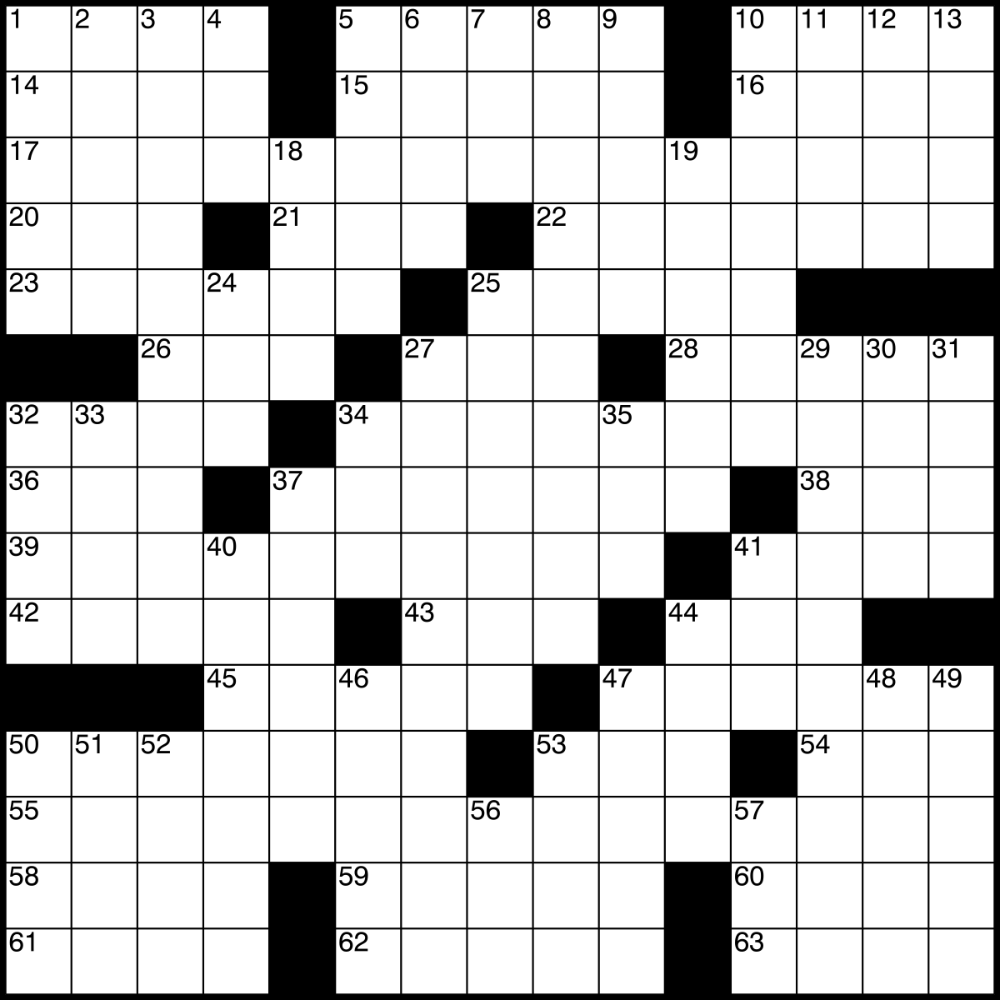

Figure: An example crossword grid.
Our solver follows a two-step process. First, given a set of clues, generate potential answers using a dense passage retrieval model trained on existing publicly available crossword data. We then assign a calibrated probability to each generated candidate answer and feed these into a constraint solver. We're currently using Matt Ginsberg's Dr. Fill as our constraint solver, but are experimenting with other methods as well. Combined with Dr. Fill, we believe our system is the strongest automated crossword solver in the world, on par with the best human solvers.